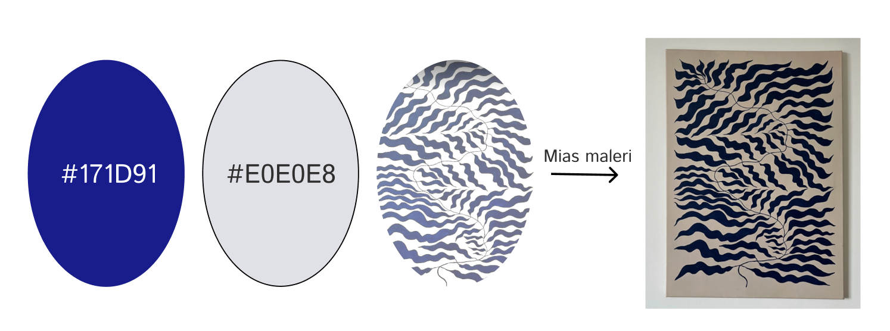

VIDEOSITET
TEMA 5
Læringsmål for tema 5
I Tema 5 opnår man en grundlæggende forståelse for videoproduktion, der omfatter præproduktion, b-roll-optagelse og postproduktion. Anvendelsen af mobilkameraer er integreret i processen, og der er ligeledes mulighed for at låne supplerende udstyr fra KEA. Hovedsageligt arbejdes der med Adobe Premiere Pro og Audition som redigeringsværktøjer. Derudover, præsenteres deltagerne for nye begreber og værktøjer inden for videoproduktionens komplekse proces.
Videositet
Besøg Videositet her:
Emilieklestrup.dk/videositet/Farver:
Se youtube videoen :
Se html videoen:
Musik:
1. Landras Dream - Audionautix
https://www.youtube.com/watch?app=desktop&v=-arN8q2HMbIKONKLUSION - HVAD HAR JEG LÆRT?
I Tema 5 har jeg opnået grundlæggende kendskab til videoproduktion, herunder præproduktion, b-roll-optagelse og postproduktion. Hovedsageligt har jeg arbejdet med Adobe Premiere Pro og Audition som redigeringsværktøjer. Mit forhold til Premiere Pro er blevet styrket, hvilket har forbedret mine redigeringsfærdigheder og givet mig en øget professionalisme indenfor grafisk videoproduktion, som jeg kan bruge i min fremtidig karrierer, derudover er jeg nu bedre rustet til at kommunikere effektivt på digitale platforme.